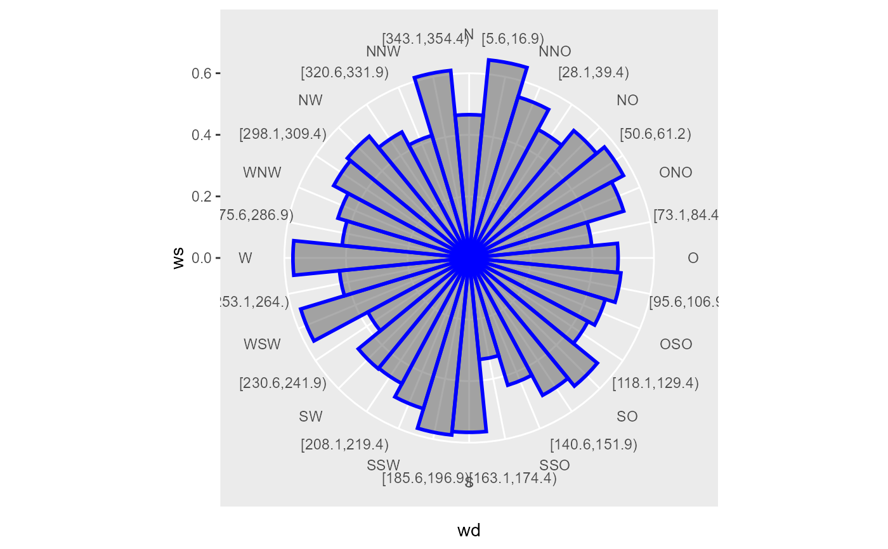
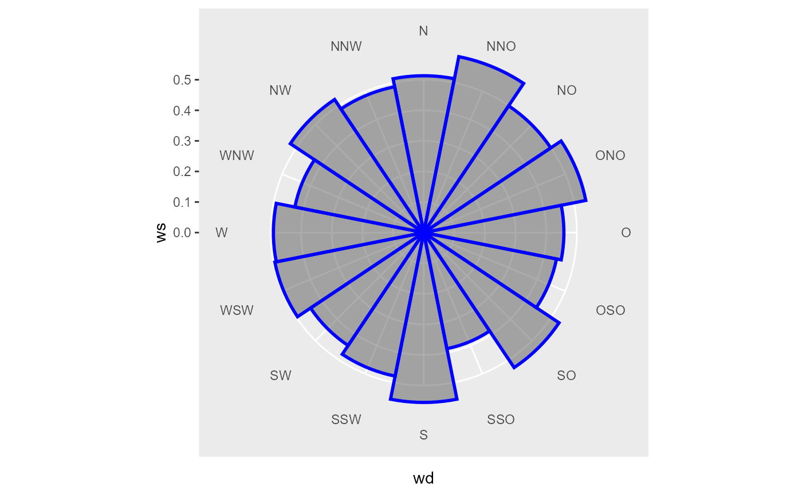

Wraps ggplot2::cut_width() function with width = binwidth. closed = "left", boundary = 0
as fixed arguments
cut_wd( wd, binwidth = 45, labels = c("N", "[5.6,16.9)", "NNO", "[28.1,39.4)", "NO", "[50.6,61.2)", "ONO", "[73.1,84.4)", "O", "[95.6,106.9)", "OSO", "[118.1,129.4)", "SO", "[140.6,151.9)", "SSO", "[163.1,174.4)", "S", "[185.6,196.9)", "SSW", "[208.1,219.4)", "SW", "[230.6,241.9)", "WSW", "[253.1,264.)", "W", "[275.6,286.9)", "WNW", "[298.1,309.4)", "NW", "[320.6,331.9)", "NNW", "[343.1,354.4)"), ... )
Arguments
| wd | numeric vector of wind directions in ° |
|---|---|
| binwidth | width for |
| labels | character vector as labels for wind direction bins; can be NULL (no labels are returned), if !is.null(labels) then length(labels) == 32 must be fullfilled (actual labels are subsampled with indices of seq(1, length(labels), length(labels) / nsectors)) |
| ... | passed to |
Examples
library(ggplot2) wd <- seq(0, 359) ws <- runif(length(wd)) # helper function to visualise cuts plot_cut <- function(wd, ws) { nSectors <- length(levels(wd)) data <- tibble::tibble(wd = wd, ws = ws) %>% dplyr::group_by(wd) %>% dplyr::summarise(ws = mean(ws)) ggplot(data, aes(x = wd, y = ws)) + geom_bar(stat = "identity", width = 1, color = "blue", size = 1, alpha = 0.5) + coord_polar2(start = - pi / nSectors) + scale_x_discrete(expand = c(0, 0)) } # defaults plot_cut(cut_wd(wd), ws)#># maximum number of cuts plot_cut(cut_wd(wd, binwidth = 11.25), ws)#># maximum number of cuts with text labels plot_cut(cut_wd(wd, binwidth = 22.5), ws)#># change label text labels <- c("North", "East", "South", "West") plot_cut(cut_wd(wd, binwidth = 90, labels = labels), ws)#>